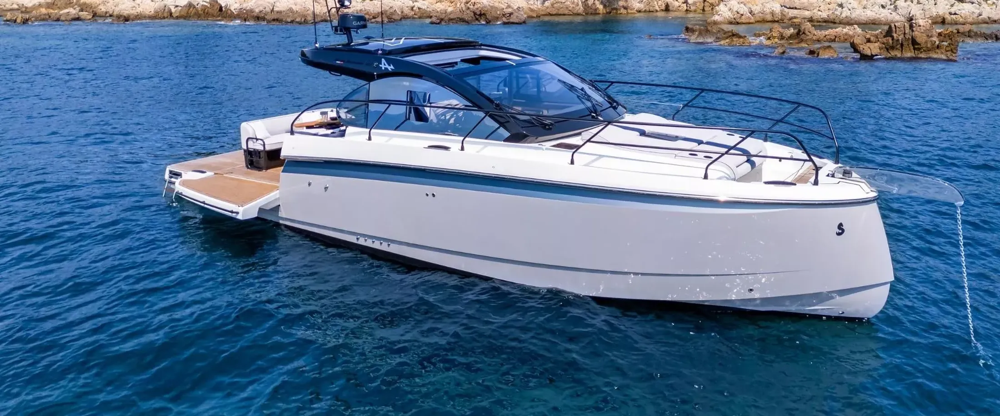

Fundada en 1994 con la representación de Beneteau. Hoy, un referente de la náutica premium en Chile.
Oceanic Chile nació en 1994 con la representación territorial de Beneteau. En poco tiempo se convirtió en líder del yachting nacional, ampliando la oferta a más marcas, servicios y una gama que hoy va del semirrígido al yate.
No representamos cualquier astillero. Cada marca del portafolio entró por una razón concreta: resuelve bien una forma de navegar que existe en Chile. Vela y motor, monocascos y multicascos, de la escuela al podio.
Hoy representamos y vendemos once marcas internacionales, además de Oceanic Power, nuestra propia línea de semirrígidos. Vela y motor, monocascos y multicascos, del semirrígido al yate.
Cuéntanos cómo navegas y te ayudamos a encontrar el barco que corresponde.